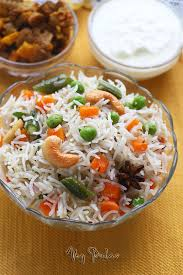

Behold! An authentic Chicken Biryani recipe with simple, easy-to-follow instructions (no curveballs!) and mouthwatering, traditional Pakistani and Indian flavor. This recipe includes tips on how to get fluffy rice, tender chicken, and the distinct biryani taste. Tested to perfection!
It took me absolutely no effort to bring you this biryani recipe. All I had to do was find the best biryani in Houston, dissect it, hound poor Rizwan for details, perform 10+ trials, use the concepts in Salt Acid Fat Heat to further perfect it, survey my email list for preferences, interpolate to figure out spice quantities, and you know…cry a little. In short, I literally ate, slept, and breathed biryani until I could proudly publish this most-beloved, highly requested recipe and do it justice. Phew. Let’s do this.